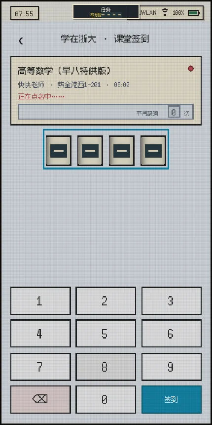
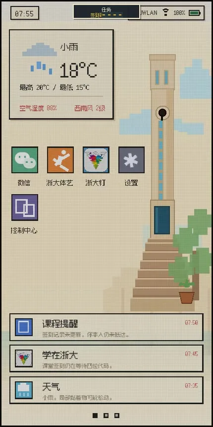
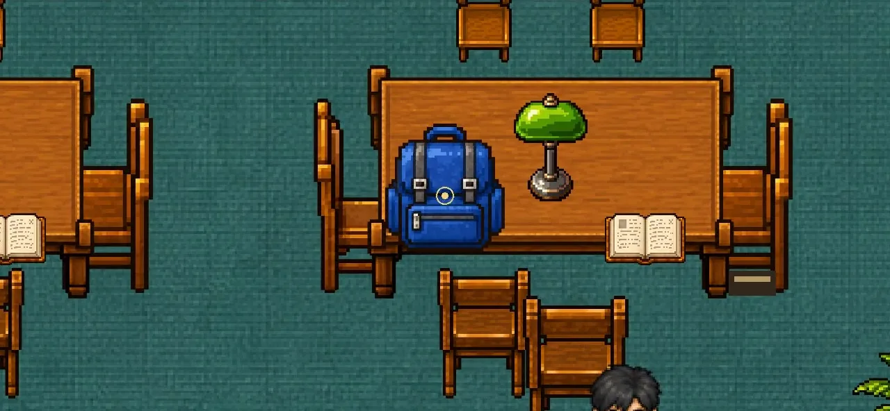
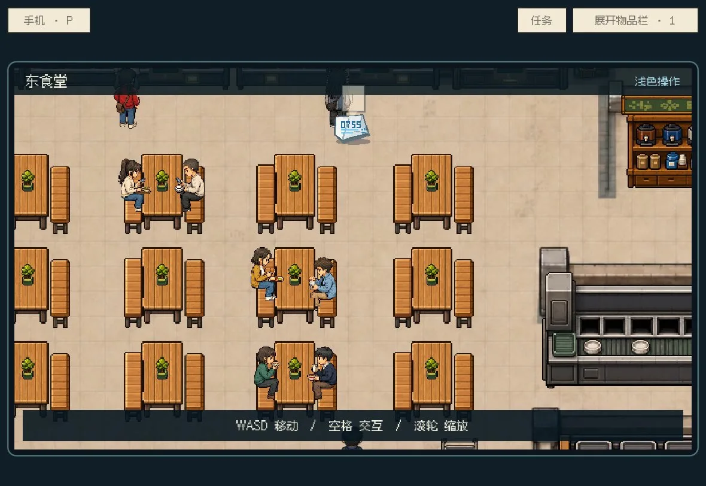
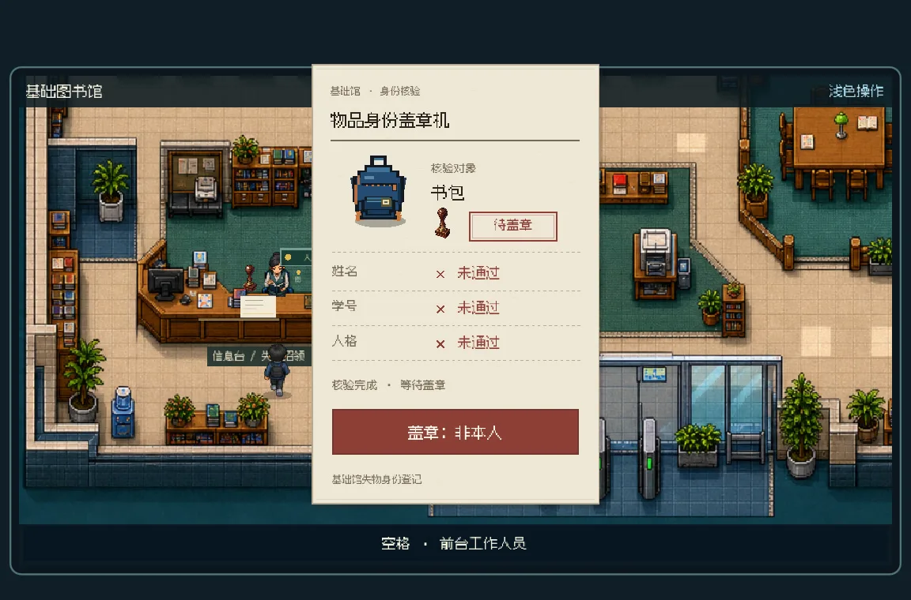
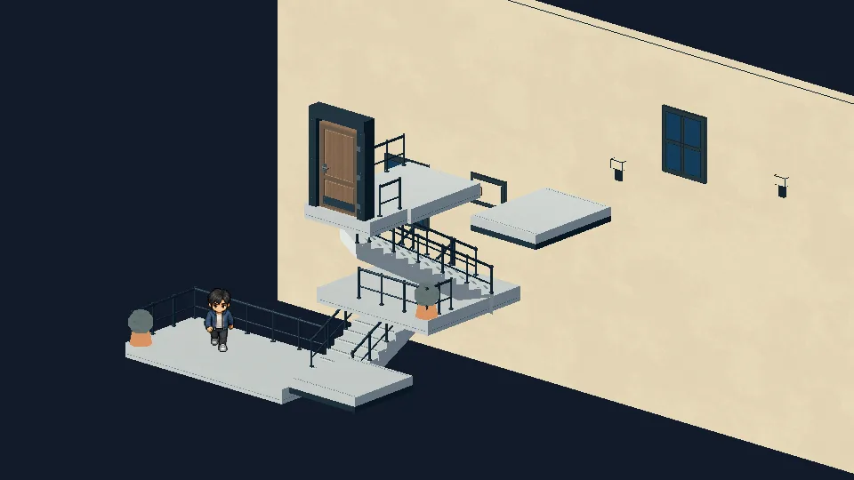
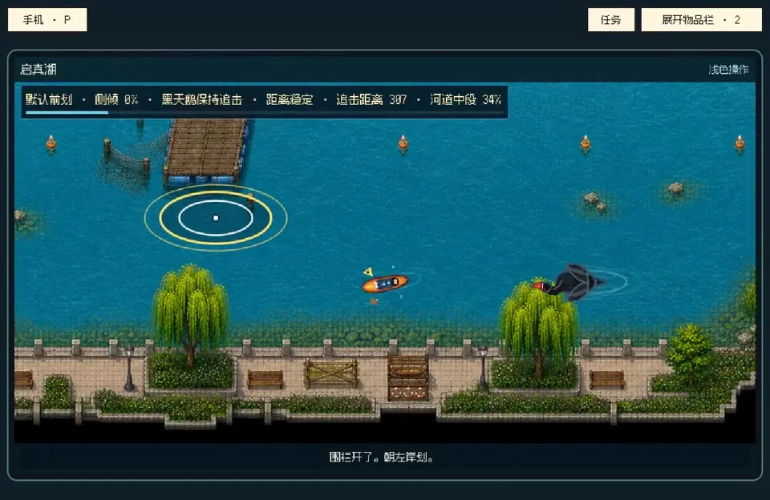
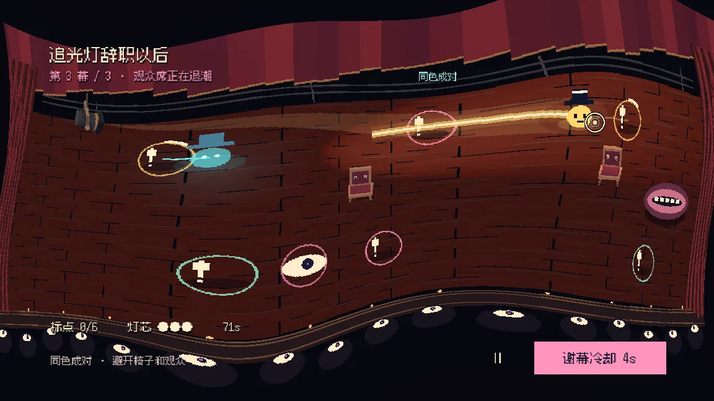
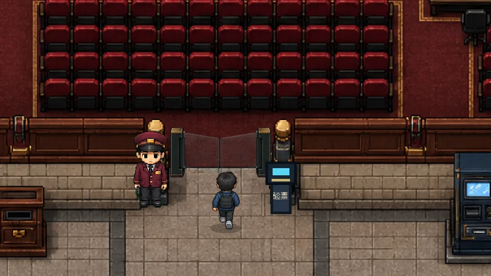

返回软件项目索引
返回软件项目索引7:55 · 校园解谜游戏
阅读项目文档 ↓《7:55》游戏简介
《7:55》是一款以浙江大学校园生活为背景的叙事探索解谜游戏，以2D像素RPG为主要表现形式，融合场景探索、互动解谜与3D空间玩法，在熟悉的校园环境中构建荒诞而有趣的冒险故事。
早晨7:55，距离签到只剩五分钟。玩家原本只想赶上早八，却发现校园里的时间与空间开始错位：消失的签到码、图书馆里需要开具《书包非本人证明》的占座事件、长出双腿逃跑的纸条，以及会重复玩家三秒前行动的影子……看似荒诞的事件背后，却隐藏着一套自洽的规则。
玩家将在CC98、图书馆、食堂、剧场、启真湖及教学楼之间穿梭，通过寻找线索、操作机关、破解谜题，逐步揭开时间异常背后的秘密。
游戏以校园日常为创作起点，将真实经历转化为富有想象力的互动体验，并在故事终章回归竺老“两问”：到浙大来做什么？将来毕业后要做什么样的人？希望玩家在解谜与欢笑之余，重新发现校园生活的意义，思考属于自己的大学故事。
未来，团队计划持续完善游戏内容，开发新篇章与支线玩法，同时建设校园共创平台，支持创意投稿、玩家反馈与进度查询，探索AI驱动的自动化投稿筛选与内容生成，让更多师生参与校园故事创作，并探索其在迎新、校庆及校园文化传播中的应用。











项目文档
7-55 项目文档
7-55 项目文档
一、项目基本信息
项目 · 内容
项目名称 · 7:55
项目类型 · 校园题材浏览器叙事解谜游戏
项目主题 · 从一次异常的早晨签到出发，在手机应用与紫金港校园之间调查、探索和解谜
面向平台 · 桌面与移动端浏览器；提供可构建的单文件游戏
已核实贡献账号 · zhu607705-coder、shiliuAurora、IonicJian、Veronicarrrrr
当前版本说明 · GitHub 最近已合并交付为 2026 年 9 月 5 日的 PR #45；本文同时纳入截至 9 月 6 日的本地后续玩法优化
原有项目基本信息表保留在本节上方；以下补充项目概况。
二、项目简介
2.1 项目背景
《7:55》是一款以浙江大学紫金港校园生活为背景的叙事解谜游戏。玩家从早晨 7:55 的闹钟、朋友消息和课堂签到进入故事。本来普通的签到操作逐渐出现异常，签到码散落在不同手机应用与桌面物件中，提交后又出现“经度与纬度不存在”等错误。玩家随后恢复角色身份、道具栏和移动能力，在寝室、图书馆、食堂、剧场、启真湖和教学楼中追查一份离开原页面的签到记录。
项目从学生熟悉的闹钟、校园卡、体育打卡、校园论坛、图书馆占座和教学楼空间切入，将手机界面中的设置与校园场景中的物件连接起来。网络切换、屏幕亮度、自动旋转、照片识别和论坛检索都可以成为解谜动作；地图中的证据、物品和场景状态也会反向影响手机中的任务与后续剧情。
项目最初形成于黑客松原型，早期重点是快速实现仿手机界面、签到码收集和基础剧情。随着章节增加，项目逐步扩展为由手机交互、俯视 RPG、追逐、节奏玩法、舞台灯光和时间迷宫组成的连续系统。验收阶段关注的内容也从“单个页面能否运行”扩展到剧情因果是否连贯、跨场景状态是否一致、失败后能否继续、存档能否恢复，以及交付版本是否具有可复现的测试证据。
2.2 项目目标
项目希望验证三个方面。
第一，校园题材能否通过具体交互形成具有辨识度的游戏体验。项目不只使用校园建筑作为背景，还把签到、体艺、CC98、图书馆规则、校园卡和教学楼设施转化为玩法条件。
第二，手机应用与 RPG 场景能否共同推动同一条剧情。玩家在手机中取得的线索会改变地图中的可用行动，地图中获得的材料又会回到手机继续核对、认证或组合。
第三，浏览器技术栈能否承载连续剧情、二维地图、小游戏、音画调度和离线交付。项目需要同时处理 React 页面、Phaser 场景、Three.js 局部空间表现、共享状态、资源加载和多端输入。
2.3 目标用户与使用场景
主要目标用户是熟悉高校生活的学生，以及喜欢像素风、校园叙事、轻量解谜和荒诞幽默的玩家。项目通过浏览器运行，适合团队内部试玩、课程展示、黑客松成果完善和后续公开体验。桌面端提供键盘、鼠标与较完整的画面空间，移动端提供触控按钮、拖拽和响应式布局。
2.4 核心功能
功能模块 · 功能说明
手机界面探索 · 在聊天、浙大钉、体艺、论坛、照片、天气、校园卡与设置之间寻找线索，完成跨应用操作
道具收集与组合 · 将数字、线条、齿轮、耳机、水滴、钥匙、票据和其他物件组合或拖到指定目标上
校园 RPG 探索 · 在寝室、校园、图书馆、食堂、剧场、湖区和教学楼中移动、调查、交谈和操作设备
深浅模式切换 · 深色观察用于读取历史痕迹和异常信息，浅色操作用于拾取、拖拽、控制设备和提交物品
章节特色玩法 · 图书馆证据调查、校园骑行追逐、剧场灯光、湖区划船与节奏钓鱼、教学楼电梯和错位楼梯
连续进度管理 · 任务提示、物品栏、章节事实、安全检查点和本地存档共同记录进度
多端与离线交付 · 支持桌面和移动浏览器，并可生成单文件游戏用于展示与分发
2.5 剧情主题与表达目标
整部游戏围绕“时间、身份、记录和本人到场”组织。开场时，7:55 只是一次早八签到的截止时间；中段时，它成为签到记录停滞和湿纸异常的时间标记；终章时，旧钟、手机和纸质记录都需要重新对齐到 7:55。
项目持续要求玩家区分“看见了什么”“推测了什么”“系统记录了什么”和“哪些证据已经通过验证”。角色需要姓名、校园卡和操作资格才能行动；图书馆 022 号座位需要入馆记录、小票、识别报告和论坛公示才能恢复；最终签到又需要校园卡、纸质记录和现场时间共同成立。
前期剧情以校园日常和制度流程的荒诞化保持轻松感，后期逐渐进入更严肃的求学与责任命题。终章校史墙提出“到浙大来做什么”和“将来毕业后要做什么样的人”，使此前围绕记录、权限和证据的玩法与个人选择发生联系。
三、核心使用流程
3.1 整体流程
关闭闹钟并查看消息 → 在手机应用中找回签到码 0798 → 提交签到并进入异常事件 → 在寝室恢复身份、道具栏和移动能力 → 前往图书馆处理 022 占座书包并联系系统朋友 → 追踪离开页面的签到记录 → 经过食堂、骑行追逐和剧场灯光机关 → 在启真湖完成地点确认、划船和节奏钓鱼 → 恢复湿纸进入教学楼的时间线 → 在教学楼时间迷宫中修复旧钟、楼层与电梯关系 → 完成校园卡与纸质记录的双重签到 → 回答楼外两问并点亮灿若星辰灯
3.2 分阶段剧情与玩法
阶段 · 大致剧情 · 玩家主要操作 · 阶段结果
身份与行动恢复 · 系统承认自己没有修改记录的权限，玩家需要进入校园寻找其朋友 · 在寝室取得校园卡，通过部门黄页确认角色姓名，启动体艺锻炼，购买手柄并验证方向输入 · 角色获得身份、物品栏和移动控制，校园地图开放
图书馆 022 · 系统朋友与 022 号座位相连，座位被长期占用的书包封锁 · 核对入馆记录，查找旧版离座规则，生成物品识别报告，取得 022 小票与到访证据，并在 CC98 完成公示 · 022 恢复，系统朋友确认签到记录已离开原页面，并夹在停留于 07:55 的湿纸中
食堂与骑行 · 湿纸离开图书馆并继续在校园中移动 · 在食堂调查和追逐，随后进入 755 米骑行玩法，使用转向、跳跃、响铃和场景道具追赶目标 · 玩家到达剧场，追逐由静态调查转为连续动作
剧场 · 玩家试图通过舞台灯光逼停湿纸 · 核对票据和节目单，操作灯控与追光，完成舞台机关 · 被灯光控制的是替身，真正湿纸沿侧边逃离并留下水迹
启真湖 · 多来源线索将目标指向湖区 · 核对论坛、馆藏、照片和地图信息，取得划船条件，组装磁性钓竿，完成四次递进节奏钓鱼 · 取得关键材料和纸条，形成进入下一章节的完整证据链
3.5 章过渡 · 湖区事件后的照片、语音和目击记录需要重新整理 · 对照四项手机证据，恢复湿纸离开湖区、经过街机区域并进入教学楼的路线 · 教学楼入口获得可核对的剧情前置，章节衔接成立
教学楼时间迷宫 · 楼内时间、楼层和空间关系错位，现场时间与签到记录不一致 · 在深色观察与浅色操作之间切换，恢复气流、电梯轨迹、配电、传送带、旧钟和楼层关系，完成维修、追逐与错位楼梯 · 旧钟、手机和签到记录重新对齐到 07:55，双重签到条件具备
3.3 剧本结构
3.3.1 日常规则进入游戏空间
手机中的网络、亮度、自动旋转和应用入口会直接改变谜题条件；校园中的座位、票据、旧钟、电梯和公告栏也具有与手机数据对应的状态。玩家需要在两种界面之间往返，才能获得完整信息。
3.3.2 湿纸作为连续剧情对象
签到记录从页面中离开后，被转化为一张可在场景中移动的湿纸。它能够留下水迹、被追光照见、在湖面形成倒影、被磁性钓竿捕获，并在教学楼中暴露时间冲突。这样可以让手机中的抽象数据与校园中的实体行动保持同一条因果线。
3.3.3 证据逐步升级
序章要求找回数字；图书馆要求证明身份、位置和物品性质；湖区要求综合论坛、馆藏、照片与地图记录；终章要求旧钟、手机、校园卡和纸质签到记录共同成立。玩家逐步从"找到答案"进入"说明答案为何可信"。
3.3.4 语气逐步变化
系统吐槽、会被行政判定的书包、CC98 公示和校园应用权限构成前期的荒诞幽默。终章通过校史人物、楼外两问和灯光收束，将注意力转向求学目的、责任、独立判断和证据诚实。
3.4 可复现操作示例：收集签到码并完成签到
该流程从开场即可进入，适合验收现场演示基本交互。
步骤 · 玩家操作 · 游戏反馈与结果
进入任务 · 关闭闹钟，进入手机主页并查看朋友消息，经历签到码散落事件 · 任务转为寻找四位数字，任务栏与物品栏开始记录进展
找到数字 0 · 进入签到相关页面，观察并点击页面中的数字线索 · 获得第一位数字 0
找到数字 7 · 在控制中心切换网络，进入浙大体艺并查看打卡次数中的线索 · 获得第二位数字 7，并理解应用对网络环境的要求
找到数字 9 · 开启自动旋转，操作桌面设置齿轮并查看背面 · 获得第三位数字 9，并取得反转齿轮
准备盆栽材料 · 收集水滴、耳机和头像上的斜线；组合盛水的耳机和钥匙，再用钥匙取得肥料 · 分散在不同应用的对象被转化为可使用道具
找到数字 8 · 给盆栽浇水、施肥，并把亮度调高至满足光照条件 · 盆栽开花，获得第四位数字 8
提交签到 · 切回正确网络，进入校务签到并输入 0798 · 签到反馈出现，随后触发经纬度异常与后续剧情
盆栽的浇水、施肥和照光可按玩家准备情况完成。输入错误或网络条件不符时，系统给出反馈，玩家可以修正后重试。
3.5 错误操作、失败重试与继续游戏
玩家用错物品、距离目标过远、尚未观察位置或处于错误模式时，游戏通常保留物品并给出可操作提示。追逐失败只重试相应片段，钓鱼失败或取消不会消耗关键剧情道具。离开地图回到手机时，章节事实和物品状态继续保留。
存档记录已经完成的稳定事实和安全检查点。逐帧位置、正在进行的节奏输入和瞬时动画不作为长期继续点。旧存档读取时需要经过版本迁移，避免任务文字已经更新而场景仍处于旧状态。
四、技术与实现
4.1 技术选型与职责划分
技术或工具 · 在项目中的用途
React 18、TypeScript · 手机页面、任务与物品界面、章节控制器、共享类型和剧情表现
Zustand · 管理跨页面、跨场景的游戏状态与持久化事实
Phaser 3 · 校园与室内地图、人物移动、碰撞、遮挡、二维互动和小游戏
Three.js · 第四章错位楼梯的局部三维空间表现
Vite、vite-plugin-singlefile · 开发预览、生产构建和单文件打包
localStorage · 保存章节事实、物品和安全检查点
Web Audio API · 音效、配音、音乐与节奏玩法的时钟和播放调度
Git、GitHub PR、GitHub Actions · 多人协作、审查、版本记录、构建检查与交付管理
Playwright 与浏览器调试工具 · 真实输入、跨浏览器、响应式布局、存档和视觉检查
MiniMax CLI、FFmpeg、ffprobe · 配音与音乐生成、裁切、响度处理、媒体规格验证和资产清单
项目曾探索 Godot Web 剧场方案，相关内容作为技术试验保留。当前正式运行以 React、TypeScript 和 Phaser 为主要框架，Three.js 只承担边界明确的错位楼梯场景。这样可以减少双引擎状态同步、资源导入和构建维护成本。
4.2 跨页面与跨场景状态
一个谜题经常跨越手机和地图。例如，玩家在图书馆取得证据，回到手机完成检索和公示，再返回图书馆改变座位状态。如果每个页面分别保存完成情况，容易出现任务栏、场景物件和物品栏不一致。
项目将章节进度、物品、已观察线索和检查点放入统一状态，由 TypeScript 控制器判断操作是否成立。React 和 Phaser 只提交玩家意图，例如"点击某对象""拖入某道具""在某位置按下交互键"。控制器检查物品、距离、模式、前置事实和幂等条件，随后统一写入状态，表现层再根据结果刷新。
推荐的状态流为：
玩家输入 → React 或 Phaser 场景适配层 → TypeScript 领域控制器 → 剧情事实、物品与检查点 → 存档版本迁移 → React、Phaser、Three.js 表现更新
长期事实可以进一步统一为版本化事件，例如 evidence_verified、item_transformed、checkpoint_committed 和 scene_transition_completed。每项事件记录来源、前置条件、幂等标识和存档版本，便于调试、回放和解释任务为何开放。
4.3 剧情内容与程序逻辑分离
项目中的对白、任务提示、物品说明、音频时间线和章节参数分散在 TypeScript 与 JSON 文件中。验收阶段需要区分三类内容：剧情真源负责描述发生了什么；领域控制器负责判断何时可以发生；表现层负责播放字幕、动画和声音。
后续可为每个章节建立内容包：
text
chapter-name/
├── story.content.json
├── quest.content.json
├── items.content.json
├── audio.timeline.json
├── scene.contract.json
└── validation.rules.json
剧情编辑只修改内容文件，状态推进只修改控制器，音画资产通过稳定 ID 关联。这样可以降低同一句台词、同一任务阶段在多个组件中重复维护的风险，也便于自动导出完整游戏文本和检查未使用条目。
4.4 地图、碰撞与交互区域
项目早期大量采用预绘制或 AI 生成的完整地图，能够快速形成校园氛围，但图片本身不包含道路、碰撞、遮挡、交互范围和出生点。后续通过截图和文字补坐标，出现了空气墙、门口不可达、角色穿入家具、前景遮挡错误和底图物件无法移除等问题。
现有"食堂碰撞体手动校准"页面支持选择矩形碰撞体、拖动、缩放、逐像素微调和 JSON 导出。开发模式也可以显示碰撞调试层。修改后的检查包括：
- 明显实体是否被阻挡。
- 空地、出生点和主要路线是否开放。
- 角色脚部是否停在正确边缘。
- 交互点是否能够从可行走区域到达。
- 允许从后方经过的墙体和家具是否只承担遮挡，不误设为大面积障碍。
下一阶段建议将每张地图整理为背景、可行走区、碰撞、遮挡、交互对象、锚点和视觉变体的资源包：
text
scene-name/
├── scene.meta.json
├── background.webp
├── walkable-mask.png
├── collision.json
├── occlusion.json
├── interactables.json
├── anchors.json
├── variants/
└── props/
门、桌椅、画像、旧钟、NPC 和任务道具应具有稳定对象 ID，视觉、碰撞、交互、深度和剧情状态共同引用同一对象。这样可以减少移动一个物件后还要分别修正多个无关联坐标的问题。
4.5 输入、画面、音频与存档
手机采用固定逻辑视口，地图采用横屏逻辑视口，由公共宿主等比例缩放。桌面端支持键盘与鼠标，移动端提供触控方向、交互按钮和拖拽。输入处理需要在页面失焦、场景退出、暂停和重试时清理，防止按键或监听器遗留。
音频系统通过时间线和统一时钟调度语音、音效与节奏判定。节奏玩法的判定时间不能依赖连续 setTimeout 累积，而应使用同一单调时钟计算目标时刻。声音播放失败时，普通剧情仍可继续；承担正式完成条件的演出则需要明确回执或兼容路径。
存档只记录稳定剧情事实、物品和安全位置。场景中的实时速度、半场节奏和粒子状态留在运行时。加载旧版本时执行迁移，避免出现已取得物品却没有后续任务、已完成对话但章节入口仍锁定等情况。
4.6 加载、资源体积与离线交付
本地单文件已经包含大量地图、音频、动画帧和章节逻辑，验收材料记录的体积约为 256 MB。继续增加内容时，需要将在线运行和完整离线包视为两种交付配置。
在线版本可以按章节加载资源，优先加载当前场景和下一场景的必要素材。离线版本保留完整内容，但使用图片压缩、音频分段、spritesheet 去空白、内容哈希复用和生成清单，减少重复文件。构建阶段输出每个章节的资源体积、重复哈希、未引用资源和首屏预算，使 PR 能够直接审查资源增长。
运行时应在进入场景前预取必要图片和音频，离开后释放不再使用的大纹理、声音缓冲与 Three.js 几何体。长语音和音乐在靠近实际播放节点时再解码。
开发目录需要区分源码、可重建产物和临时诊断文件。dist/、浏览器 trace、录屏缓存、AI session、旧工作树、ZIP 和临时图片不进入普通提交。正式演示包通过 Release 保存，并记录对应提交、构建命令、文件大小和校验值。
4.7 AI 辅助开发与工程边界
AI 参与需求拆分、组件与控制器编写、素材接入脚本、问题定位、测试脚本和文档整理。团队负责提出体验目标、判断剧情和玩法方向、指出实际画面中的问题，并通过真实试玩确认结果。
项目也暴露了 Vibe Coding 容易产生的维护问题。随着连续修改，场景文件可能持续膨胀，同类状态散落多处，旧实现和兼容代码没有及时删除；AI session、Playwright trace、截图、单文件构建和旧工作树也会占据大量磁盘空间。代码仍能运行时，这些问题容易被推迟处理，后续合并和调试成本会快速上升。
建议采用以下约束：
- 每轮 AI 任务记录基线提交、允许修改目录、禁止回退项和验收路径。
- 按剧情领域建立小型上下文包，例如"图书馆 022""启真湖材料链""第四章旧钟"。
- 为超大场景控制器和内容文件设置规模提示，触发职责审查和必要拆分。
- 对 session、trace、截图、视频、旧构建和旧工作树设置保留期限，只保存已被引用的诊断证据。
- 定期删除失效文档、重复素材和退出正式运行的兼容层，避免继续进入模型检索结果。
4.8 运行与验证方法
安装 Node.js 22 后，在仓库根目录执行：
bash
npm ci
npm run dev
打开终端显示的本地地址即可试玩。开发者检查点用于快速定位指定谜题，但检查点完成后仍需从正式入口验证前后衔接。
常见检查命令包括：
bash
npm run typecheck
npm run qizhen:validate-fishing
npm run build
npm run build:single
npm run verify:single
这些命令分别用于类型检查、钓鱼规则校验、常规构建、单文件构建和产物结构检查。构建通过只能证明程序能够生成产物，无法证明道路可达、谜题可完成、触控可用或存档能够恢复。因此还需要浏览器中的真实操作。
验收顺序采用两层检查。先进行动态极限路径与视觉检查，覆盖桌面、移动端、进入和退出、失败与重试、存档与重载、遮挡、缩放和文本溢出；再进行静态审查，包括类型、领域断言、资源引用、存档迁移、构建产物和代码差异。
五、小组分工
成员／账号 · 分工
朱航成 · 游戏程序集成、启真湖与第四章部分
潘潇莹<br> · 剧情文本、任务提示与交互文案优化<br>游戏设计 食堂部分
林子鉴 · 第三章场景交互、大地图构建<br>视频剪辑 图书馆部分 手机 ui
董睿 · godot 版开发 细节优化和玩法设计 剧场开发 手机 ui
六、开发过程
6.1 时间线
以下日期按项目材料整理。规划文件可以证明方案已经提出，已合并 PR 和验证记录用于证明具体实现或修复进入了相应版本。
时间 · 阶段与主要工作 · 形成的成果
7 月上旬 · 明确手机解谜原型，规划签到码、道具组合、网络与亮度操作 · 建立第一章基本结构和像素手机界面方向
7 月 17 日至 20 日 · 整理工程，完善手机交互、身份门控、校园移动和图书馆调查 · 形成手机与校园 RPG 的基础衔接
7 月 20 日至 24 日 · 统一桌面与移动端适配，补充浏览器和构建检查 · 提高不同尺寸下的可用性，形成开发者直达与专项验证方法
7 月 26 日至 30 日 · 深化食堂和第三章流程，同时探索 Godot 剧场 · 验证跨引擎方案，同时暴露资源、状态和迁移成本
8 月 1 日至 20 日 · 接入剧场至启真湖路线，完善码头、湖区玩法、节奏钓鱼和第四章检查点 · 形成较完整的后半段连续体验
9 月 3 日至 5 日 · 优化第三、四章因果、环境线索与交付记录 · PR #45 形成一项已记录的发布基线
9 月 6 日以后 · 继续优化字幕、错位楼梯、追逐楼梯间、剧场表现和钓鱼一致性 · 形成后续本地候选版本，仍需统一合并和整体验收
6.2 从想法描述到可验收操作
项目早期常使用"把这里改得更有趣""这里有空气墙""这一段不连贯"等体验描述。随着章节复杂度上升，需要把这些反馈转换为明确条件：玩家从哪里进入，必须具备哪些前置事实，能够执行什么动作，成功后写入什么状态，失败后怎样恢复，退出再进入是否保留进度。
以图书馆为例，验收不能只看书包是否消失，还要确认旧规则、识别报告、座位小票和到访证明可以按允许顺序取得，论坛公示后座位状态改变，玩家离开再回来仍能继续。以钓鱼为例，验收也不能只看捕获动画，还要确认输入判定、张力、失败重试、道具保留、一次性结算和场景退出都符合约定。
6.3 一轮修改的实际流程
试玩并记录具体问题 → 使用检查点复现 → 判断问题属于显示、输入、碰撞、前置条件、资源还是存档 → 划定修改范围和禁止回退项 → AI 辅助修改代码与数据 → 运行专项检查和真实操作 → 检查相邻入口、退出、失败与重载 → 记录证据并整理 PR
发现问题时，应记录场景位置、触发动作、当前物品、当前模式、实际结果和预期结果。修复后回到同一检查点操作，并补测紧邻路径。例如缩小桌边碰撞后，还要确认角色不会穿桌、交互点仍可达、离开后能够重新进入。
6.4 引擎选择与迁移教训
项目中途曾尝试 Godot Web 剧场。该试验证明 Godot 能够实现相应场景，但迁移还会引入素材导入、React 与 Godot 通信、双运行时生命周期、状态同步、移动端输入、Web 导出和离线构建等工作。
这次经历说明，引擎选择需要在项目早期结合已有手机界面、主要交互方式、团队熟悉程度、目标平台和交付形式进行验证。单独比较某个引擎能否制作某种画面，无法覆盖迁移成本。当前方案收敛到 React、TypeScript 和 Phaser，Three.js 只在局部使用，使核心剧情和存档保持一套实现。
6.5 Vibe Coding、超大文件与磁盘占用
AI 能够快速增加功能，也可能把多个阶段逻辑持续写入同一个文件，产生超大控制器、重复条件和隐蔽耦合。长会话又会保留大量 session、截图、trace、录屏和构建产物，磁盘占用不断增加，模型搜索时还可能读取已经过期的输出。
项目后续需要建立三类治理机制。第一类是代码边界，按领域拆分状态、规则、表现和资源，超大文件触发职责审查。第二类是版本边界，每次任务记录基线提交、改动目录和权威来源。第三类是临时文件边界，定期清理 AI session、Playwright trace、旧 worktree、ZIP 和单文件测试产物，只保留已进入验收记录的证据。
6.6 PR、验证和交付收尾
Git 文本合并只能解决行级冲突，无法自动判断两个分支中的玩法版本哪个应当保留，也无法证明合并后的游戏仍可完成。功能整合需要明确权威来源和禁止回退项，版本验收还需要从正式入口检查关键流程。
PR 建议固定记录基线提交、问题复现、修改范围、剧情事实、存档影响、资源变化、动态检查、静态检查和已知边界。大型修改拆成状态控制、场景资产、表现层和文档等较小单元。主分支的必要质量门槛放入 GitHub Actions 和分支保护，不依赖个人电脑上的本地钩子。
验收材料中已有的记录包括：PR #45 的发布检查和定向多浏览器验证；后续钓鱼候选版本的类型检查、规则校验、单文件构建和多浏览器实玩。上述证据对应指定版本和路径，不能替代整部游戏在所有设备上的完整重测。
七、项目视频演示
[7-55.mp4]
八、项目不足与后续计划
8.1 地图空间数据形成较晚
预绘制地图能够快速建立氛围，但可行走区、碰撞、遮挡和交互点没有同步形成，导致后期出现空气墙、门口不可达和视觉与碰撞不一致。现有食堂校准工具缓解了坐标调整问题，但尚未成为覆盖所有场景的通用地图编辑器。
后续从教学楼、剧场和启真湖等返工较多的场景开始，补建道路、障碍、遮挡、锚点和交互对象数据。先验证主要路线，再叠加高精度美术。固定背景继续保留在底图中，高频变化对象逐步拆成独立 Sprite 和状态变体。
8.2 新玩家理解成本仍需验证
跨应用线索、长道具链、深浅模式和多阶段机关提供了探索空间，也可能使首次玩家难以判断下一步。开发者熟悉答案，容易低估提示不足和入口不明显的问题。
后续邀请未参与开发的同学从正式入口试玩，记录停留时间、重复操作、错误使用、提示打开次数和退出位置。根据实际数据调整线索可见性、任务文字、失败反馈和辅助模式。
8.3 AI 修改范围扩大后的回归风险
更强模型能够一次修改更多文件，但也可能把局部需求扩展到共享状态、公共输入和旧章节。若没有明确边界，容易出现旧实现被恢复、已验证功能被覆盖或文档与代码不一致。
8.4 资源体积与设备覆盖
本地单文件约 256 MB，图片、音频和动画资源仍有压缩与去重空间。真实手机机型、弱网、长时间运行和整段流程覆盖也不充分。
后续建立章节资源预算、重复哈希报告和未引用资源检查；在线版本按章节加载，离线版本保留完整资源清单。扩大真实设备测试，检查首次加载、触控、后台切换、音频恢复、内存占用和长时间运行。
8.5 文档、素材来源与统一版本
根目录说明、历史引擎方案、局部开发文档和当前正式实现之间仍可能存在差异。素材来源、生成方法和许可信息也需要继续整理。9 月 6 日以后的本地优化尚未全部进入同一 GitHub 交付版本。
正式展示前应统一源码、运行说明、演示包、截图、视频和验收记录。每个 Release 记录提交、构建命令、文件大小、校验值、浏览器范围、已验证路径和已知问题。
8.6 后续计划与验收标准
优先事项 · 准备怎样做 · 如何判断有效
整理地图空间数据 · 为问题地图补建道路、碰撞、遮挡、交互点和锚点，拆出高频动态物件 · 人物能走完主要路线，入口和物品点可达，阻挡与画面一致
扩展可视化编辑器 · 在现有矩形校准基础上增加可行走区、遮挡、交互与出生点编辑 · 成员能够直接标注边界并导出数据，减少反复描述坐标
控制 AI 返工成本 · 每轮记录基线、范围、禁止回退项、验证路径和临时文件清单 · 同一问题的重复修改减少，版本来源可以追踪
统一发布版本 · 收口本地候选改动，复测正式入口、失败、重试、退出、重载和关键存档 · 源码、文档、视频和构建产物对应同一提交
优化资源加载 · 建立章节清单、压缩与去重，在线版本采用分章节加载 · 首次加载资源减少，单文件体积和峰值内存下降
扩大玩家测试 · 邀请陌生玩家和真实手机参与试玩 · 根据实际卡点调整提示，形成问题记录和修复闭环
Godot 移植 · 评估现有技术栈与 Godot 的映射关系，逐步迁移场景、角色、交互和存档系统，优先保证核心玩法可运行 · 核心场景可在 Godot 中正常运行，存档兼容，性能不低于现有版本<br>